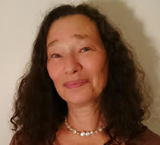

| Medarbejdere |

Jørgen Felding, autoriseret psykolog, cand. psych., godkendt af Dansk Psykologforening som specialist og supervisor i psykoterapi.
Jørgen Felding grundlagde Fonden Psykologisk Center i 1984 og arbejdede der indtil den selvejende institution blev lukket i 2016. Han har skrevet artikler i faglige tidsskrifter om sit arbejde med unge med antisociale træk og holder foredrag, underviser og superviserer i emner relateret hertil, efter rekvirentens ønske.
Jørgen modtager både unge, som er henvist af Socialforvaltningen og personer, som betaler selv eller gennem sundhedsforsikring, i psykologbehandling.
Se Jørgens CV.

Talli Ungar Felding, autoriseret psykolog, cand. psych., godkendt af Dansk Psykologforening som specialist og supervisor i psykoterapi.
Talli Ungar Felding var ansat ved Fonden Psykologisk Center fra 1985 indtil den selvejende institution blev lukket i 2016. Hun fungerede som Fondens visitator. Hun har lang erfaring med psykologiske undersøgelser efter Otto Kernbergs strukturelle interviewmetode.
Talli har skrevet flere artikler i faglige tidsskrifter om sit arbejde med unge med flygtninge- og indvandrerbaggrund og forskellige tværkulturelle problematikker (se under ”artikler”). Hendes nyeste artikel, ”Socialpædagogisk arbejde med uledsagede flygtningeunge”, udkom i tidsskriftet Social Kritik i november 2017. Hun udarbejder bl.a. psykologiske undersøgelser af uledsagede flygtningeunge for Roskilde Kommune og superviserer integrationsmedarbejdere ved Hedensted Kommunes Jobcenter. Hun holder kurser og foredrag efter rekvirentens ønske og har fremlagt materiale relateret til sit arbejde på danske og internationale konferencer på både dansk og engelsk.
Talli har lang erfaring i psykologbehandling af unge med personlighedsforstyrrelser og antisociale symptomer og pårørenderådgivning til deres familier. Hun modtager både unge, som er henvist af Socialforvaltningen og personer, som er henvist af deres almentpraktiserende læge, betaler selv eller har sundhedsforsikring.
Talli har en postgraduat uddannelse i klinisk sexologi og har skrevet artikler i faglige tidsskrifter om den sexuelle forstyrrelse vaginisme: ”Vaginisme – en sexuel forstyrrelse hos kvinder” og Vaginisme & graviditet. Hun modtager par og enlige med sexuelle vanskeligheder og andre problemer i parforholdet i psykologbehandling og har bl.a. erfaring med heterosexuelle og homosexuelle parforhold, transkønnethed og sadomasochistiske problematikker samt afhængighed af sex, porno og prostituerede. Hun har lang erfaring i arbejdet med senfølger af sexuelle overgreb hos både unge og voksne og hun bruger bl.a. sin sexologiske ekspertise i Socialstyrelsens Kompetencecenter Prostitutions psykologordning, se http://socialstyrelsen.dk/voksne/prostitution
Talli superviserer og holder foredrag om klinisk sexologiske emner efter rekvirentens ønske.
Talli er dansk kontaktperson for Nordisk Forening mod Børnemishandling og Omsorgssvigt, NFBO
Talli optræder i Kvinfos ekspertdatabase og bliver derfor brugt af medierne.
Se Tallis CV.
Jørgen Felding – CV
Fødselsår: 1950
Oprettede Psykologisk Center i 1984
e-mail
Uddannelse:
| 1982: |
Cand. psych. fra Københavns Universitet |
| 1994: |
Offentlig autorisation som psykolog |
| 1995: |
Godkendt af Dansk Psykolog Forening som specialist og supervisor i psykoterapi |
Øvrige ansættelser:
| 1973-1980: |
Ansat ved Københavns Kommunale Narkosystem |
| 1982-1984: |
Psykolog i Københavns Kommunes Social- og Sundhedsforvaltning |
| Derudover foredragsvirksomhed og kurser i hele landet |
Skriftlig produktion:
| 1980: |
Pædagogik og Barndom. Forlaget Unge Pædagoger/Politisk Revy. Medforfattere: Niels Møller og Søren Smidt |
| 1982: |
Leg og Virkelighed. Forlaget Unge Pædagoger/Politisk Revy. Medforfattere: Niels Møller og Søren Smidt |
| 1990: |
Det Antisociale Syndrom. Nordisk Psykologi vol. 42, nr. 5, s. 313-333. Medforfatter: Niels Møller |
| 1995: |
Psykoterapeutisk behandling af antisociale i puberteten. Nordisk Psykologi vol. 47, nr. 2, s. 140-154. Medforfatter: Niels Møller |
| 2001: |
Ti timer slår ikke til (om psykoterapi til unge med borderline personlighedsforstyrrelser), PsykologNyt 55 Årg., nr. 19, s. 10-14. Medforfattere: Helene Døssing, Talli Ungar Felding, Niels Møller, Berit Skov Schmitto og Natascha Wulff |
| 2010: |
Jørgen Felding, Talli Ungar Felding og Niels Møller: Unyttig og uvidende, Weekendavisen 8/1 2010 |
Talli Ungar Felding – CV
Fødselsår: 1957
Ansat på Psykologisk Center 1985
e-mail
Uddannelse:
| 1985: |
Cand. psych. fra Københavns Universitet |
| 1987: |
Efteruddannelse i klinisk sexologi hos Preben Hertoft mfl. (sexologisk workshop) |
| 1994: |
Offentlig autorisation som psykolog |
| 1995: |
Godkendt af Dansk Psykolog Forening som specialist og supervisor i psykoterapi |
Øvrige ansættelser:
| 1985: |
Undervisningsassistent ved Center for Kvindeforskning, Københavns Universitets humanistiske fakultet, i “Kvinders psykiske strukturer i historisk udviklingsperspektiv” |
| 1989-1993: |
Sexologisk konsulent ved gynækologisk afd., Københavns Amts Sygehus i Herlev |
| 1990: |
Undervisningsassistent ved Psykologisk Laboratorium, Københavns Universitet, i “psykologisk sexologi” |
| 2006-2016: |
Tilknyttet Socialstyrelsens psykologordning for personer med senfølger efter seksuelt misbrug i barndommen |
| 2006-: |
Tilknyttet Socialstyrelsens psykologordning for prostituerede |
| 2012-2017: |
Psykologisk konsulent ved Skolen Sputnik |
| 2018-: |
Ydernummer til den Offentlige Sygesikring med kontor i Stenløse |
Længerevarende supervisionsforløb:
| 2000-2001: |
Københavns Kommunes Specialinstitution for Stofmisbrugere, Forchhammersvej: Supervision af socialpædagogisk personale vedr. narkomaner med kriminel adfærd, personlighedsforstyrrelser og psykoser |
| 2003-2009: |
Projekt UNIIK (Unge I Ishøj Kommune), Ishøj: Supervision af psykologer vedr. unge med vanskelige psykosociale problemstillinger |
| 2008: |
Den matrikelløse institution, Faxe Kommune: Supervision af socialpædagogisk personale vedr. unge med vanskelige psykosociale problemstillinger og antisocial adfærd |
| 2012: |
Ungekontakten Porten, Hvidovre Kommune: Supervision af socialpædagogisk personale vedr. unge med vanskelige psykosociale problemstillinger |
| 2016-: |
Ungeenheden i Hedensted Kommunes Jobcenter: supervision af socialpædagogisk personale, lærere og sagsbehandlere ved integrationsteam, projekt for unge med skolevægring og STU |
Skriftlig produktion:
| 1980: |
Mor-datter forholdets betydning for modsætningerne i den kvindelige sexualitet (boganmeldelse). Udkast 2/1980, s. 194-198. Medforfattere: Vibe Strøier Larsen og Helle Thorning |
| 1984: |
Sexuelle billeder hos mænd og kvinder i pornografien. Nordisk Forum 41/1984, s. 60-73. Medforfatter: Vibe Strøjer Larsen
Sex og vold. Politisk Revy 24/8-1984, s. 18-19 |
| 1985: |
Pornografi og erotisk kunst. Politisk Revy 8/3-1985, s. 20-21
Pionerkvinder i psykologien (boganmeldelse). Psyke & Logos 1/1985, s. 238-242. Medforfatter: Vibe Strøier Larsen |
| 1986: |
Sigmund Freud: Afhandlinger om sexualteori (boganmeldelse). Nordisk Sexologi 3/1986, s. 123-124 |
|
|
Psykologiske kønsforskelle. I: Susanne Lunn og Nicole Rosenberg (red.): Psykologi – en indføring i teori og anvendelse. Reitzel, København 1986, s. 70-83. Medforfattere: Susanne Lunn og Nicole Rosenberg |
|
|
Mini-leksikon. I: Psykologi – en indføring i teori og anvendelse. Reitzel, København 1986, s. 288-317 |
|
| 1987: |
Vaginisme – en sexuel forstyrrelse hos kvinder. Psyke & Logos 1/1987, s. 152-173 |
| 1989: |
Freud og sexologien. Psyke & Logos 1/1989, s. 72-88 |
|
|
Festskrift til sexologiens nestor (boganmeldelse). PsykologNyt 24/1989, s. 750-751 |
| 1990: |
Området mellem psykologi og gynækologi. PsykologNyt 2/1990, s. 40-42 |
|
|
Kvinden i psykiatrien (boganmeldelse). Nyt Forum for kvindeforskning 2/1990, s. 70-74 |
| 1991: |
Svar til Jytte Willadsen, (vedr. anmeldelsen af “Kvinden i psykiatrien”). Nyt Forum for kvindeforskning 1/1991, s. 72-73 |
| 1994: |
Inkvisitoriske undersøgelser kan være nødvendige (kommentar). PsykologNyt 15/1994, s. 585-587 |
|
|
Eva Hildebrand & Conni Gregersen: Drenge og sexuelle overgreb (boganmeldelse). Matrix 3/1994, s. 46-62. Dansk Psykologisk Forlag |
|
Kommentar til temanummeret “Psykologi og kønsforskning” (Psyke & Logos 1/1994). Psyke & Logos 2/1994, s. 462-477 |
| 1996: |
Klienten siger mord (debatindlæg). PsykologNyt 13/1996, s. 24-25 |
|
Ære og Skam (boganmeldelse). PsykologNyt 21/1996, s. 6-9 |
| 1999: |
Vaginisme og graviditet. Psyke & Logos 1/1999, s. 214-238. Dansk Psykologisk Forlag |
|
|
Personligheden til eksamen (boganmeldelse). PsykologNyt 23/1999, s. 28-32 |
| 2000: |
Jeg skal hermed beklage (debatartikel om Dansk Psykolog Forenings Etiknævn). PsykologNyt 4/2000, s. 12-16 |
| 2001: |
Kulturelle særtræk eller psykopatologi – offentlige myndigheders vanskeligheder med at hjælpe unge piger fra indvandrerfamilier. Matrix 3/2001, s. 229-266 |
|
|
Ti timer slår ikke til (om psykoterapi til unge med borderline personlighedsforstyrrelser). PsykologNyt 19/2003, s. 10-14. Medforfattere: Helene Døssing, Jørgen Felding, Niels Møller, Berit Skov Schmitto og Natascha Wulff |
| 2002: |
Leksikonartikler i: Ole Andkjær Olsen (red.): Psykodynamisk Leksikon, Gyldendal, København 2002. Artikler om: Falske erindringer, kønsidentitet, kvindelighed, kernekønsidentitet, mandlighed, maskerade, moderskabsmisundelse, penismisundelse, vagina dentata, vaginisme. Sammen med Ole Andkjær Olsen medforfatter på artikler om: Incest, kastrationskompleks, kvindelighedsfase, kvindelighedskompleks, mandlighedskompleks |
| 2003: |
Spielrein på film (Kommentar til en filmanmeldelse af filmen “Jeg hed Sabina Spielrein”). PsykologNyt 11/2003, s. 26-27 |
| 2004: |
Mere end drengestreger. Kroniken i Politiken 19.10.2004 |
| 2005: |
Kriminelle indvandrerdrenge kan behandles. Socialrådgiveren 4/2005, s. 10-12 |
|
|
Kriminelle indvandrerdrenge psykologisk set – en gennemgang af psykologiske undersøgelser af 14 drenge i 13-16 års alderen og af socialforvaltningens håndtering af sagerne. Psyke & Logos 2/2005, s. 221-257 |
| 2006: |
Kønnets psykologi. I: Ole Andkjær Olsen, Christian Braad Thomsen og Bente Petersen (red.): Fokus på Freud, Reitzel, København, 2006, s. 83-89 |
| 2010: |
Jørgen Felding, Talli Ungar Felding og Niels Møller: Unyttig og uvidende, Weekendavisen 8/1 2010 |
| 2017: |
Socialpædagogisk arbejde med uledsagede flygtningeunge, Social Kritik nr. 151, november 2017, s. 4-23 |
Præsentationer ved faglige konferencer:
| 2005: |
Oral presentation: Psychosocial Factors Associated with Criminal Behavior in Adolescent Immigrant Boys in Denmark: A Content Analysis of Fourteen Case Studies. Annual Conference of the Society for Social Work and Research (SSWR). Miami, Florida, januar 2005 |
| 2012: |
Oral presentation: Adolescent Refugees and Immigrants with Separation Trauma: A Content Analysis of Nine Case Studies. Conference on Trauma Through the Life Cycle from a Strength-Based Perspective. Jerusalem, Israel, januar 2012 |
| 2012: |
Keynote Speaker at the Conference of NFBO (Nordisk Forening mod Børnemishandling og Omsorgssvigt): The Difficulties of Ethnic Minority Adolescents in Denmark. Parental Use of Corporal Punishment and the Difficulties of Danish Social Authorities in Handling Cases of Child Abuse and Neglect in Ethnic Minority Families. Bergen, Norge, maj 2012 |
| 2013: |
Keynote Speaker at the Conference of NECSE (Northern European Conference on Sex Education): Pornography: Food for Fantasy Fårevejle, Danmark, april 2013 |
| 2014: |
Workshop: Separationstraumer og antisociale symptomer hos unge flygtninge og indvandrere. En analyse af psykologiske undersøgelser af 9 unge i 14-17 års alderen og af Socialforvaltningens håndtering af sagerne. Conference of NFBO (Nordisk Forening mod Børnemishandling og Omsorgssvigt), Nuuk, Grønland, august 2014 |
| 2016: |
Workshop: Uledsagede flygtningeunge. Traditionalisme og modernitet. Conference of NFBO (Nordisk Forening mod Børnemishandling og Omsorgssvigt), Stockholm, Sverige, maj 2016 |
| 2017: |
Mundtlig præsentation: Uledsagede flygtningeunge: Kan vi undgå seksuelle misforståelser og overgreb? Kulturforskelle, posttraumatisk stress og forskelle i sociale normer omkring seksualitet. Forskningsnetværket mod overgreb mod børn, Hindsgavl Konferencen, september 2017 |
Bestyrelsesarbejde:
|